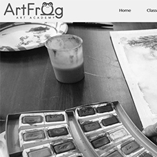

My Work
Art Frog ArtAcademy
Website created for the ArtFrog Art Academy a non-profit organization in the Austin, TX area. The site was created for the 2019 Knowability Accessibility Internet Rally (AIR) competition and won second place in the compitition. My focus for this project was on the Front End and Accessibility Elements
- HTML
- CSS
- JavaScript
Probate Consulting

This site is a static informational site for Probate Consulting. The site was created for a Realtor in New Braunfels, TX.
- HTML
- CSS
- JavaScript
New Critter Studios

This site was a full stack application created as the capstone project for graduation from the Austin Coding Academy's Full Stack JavaScript Development program. It was created using HTML, CSS, JavaScript, React, Node and Express. It is currently hosted on Heroku.
- HTML
- CSS
- JavaScript
- React
- Node
- Express
- Adobe Illustrator
About Me

I am a visual/graphic artist and former academic counselor turned software engineer.
While I am a full stack developer who uses Node.js, Express.js, MongoDb, and SQL to build scaleable and robust back-ends. My passion is creating elegant and user-friendly front-end components and UI elements using HTML, CSS, JavaScript and React.js.
I enjoy hiking, biking and spending time with my Great Pyrenees "Freya". I also spend time working on my latest art projects, miniature dioramas, reading, or most currently being destroyed in PVP on Destiny 2.
If you would like to know more about me, check out my resumé or hit me up on any of my social media pages.
.svg)

.svg)